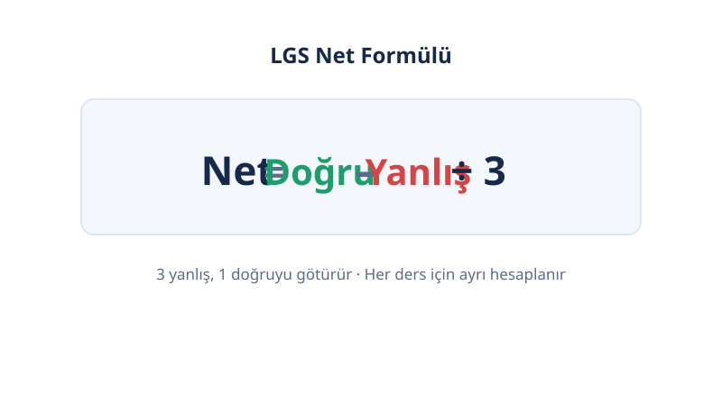

Ücretsiz sınav hesaplama araçları
Sınav Puanını Saniyeler İçinde Hesapla
Son güncelleme: 18 Ekim 2026 · Yazar: PuanRobotu Editör Ekibi
LGS'den YKS'ye, KPSS'den ALES'e — 24 hesaplama aracı tek adreste. Doğru ve yanlış sayılarını gir, netini ve tahmini puanını anında öğren.
Kategoriler
Hangi aşamadaysan, araçların orada. Kategorini seç:
Neden PuanRobotu?
- Resmi mantık: Her araç, ilgili kurumun (MEB, ÖSYM, YÖK) resmi puanlama formülüne göre çalışır.
- Dürüst tahmin: Sonuçların neden "tahmini" olduğu her sayfada açıkça anlatılır — kesin puan vadi yok.
- Gizlilik: Hesaplama tarayıcında yapılır; verilerin hiçbir yere gönderilmez.
- Hız: Kayıt yok, bekleme yok, reklam engeli yok.
Sık Sorulan Sorular
PuanRobotu nedir?
Türkiye'deki sınavlar için ücretsiz hesaplama araçları sunan bir platformdur: LGS, YKS, KPSS, DGS, ALES, YDS/YÖKDİL, TUS/DUS puan hesaplayıcıları ile vize-final, GANO gibi not araçları tek çatı altındadır.



Hesaplamalar ne kadar doğru?
Araçlar, ÖSYM ve MEB'in resmi puanlama mantığına (net formülü, katsayılar, puan aralıkları) göre çalışır. Nihai puan sınav sonrası istatistiklere bağlı olduğundan sonuçlar "tahmini" olarak sunulur.
PuanRobotu ücretsiz mi?
Evet, tüm araçlar tamamen ücretsizdir ve hesap açmanız gerekmez.
Girdiğim veriler saklanıyor mu?
Hayır. Tüm hesaplamalar tarayıcınızda yapılır; girdiğiniz hiçbir veri sunucuya gönderilmez veya saklanmaz.